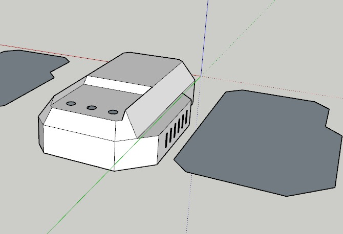

Semana 4: Modelado 3D y Prototipo Físico del Dispositivo "Niqui"
En la cuarta semana de nuestro proyecto, comenzamos a avanzar en el modelado 3D del dispositivo "Niqui" y en la creación de un prototipo físico utilizando una maqueta en papel. Este paso ha sido fundamental para materializar nuestras ideas y visualizar cómo se integrarán todos los componentes del dispositivo en un formato tangible..
Además, dedicamos tiempo a adquirir los materiales necesarios para la construcción del prototipo. La elección de los materiales fue crucial, ya que buscamos que el dispositivo no solo sea funcional, sino también resistente y adecuado para su uso en entornos exteriores.
Durante esta fase, realizamos ensayos de prueba y error, lo que nos permitió ajustar y perfeccionar el diseño. Este proceso de experimentación nos enseñó mucho sobre la interacción de los diferentes elementos del dispositivo y cómo optimizar su funcionamiento. Cada ensayo nos acercó un paso más a la creación de un producto que cumpla con nuestras expectativas y, sobre todo, que sea efectivo en la detección y monitoreo ambiental. Este avance en el modelado y la creación del prototipo físico ha sido emocionante y nos motiva a continuar trabajando hacia la realización de "Niqui", asegurándonos de que cada aspecto esté bien diseñado y funcional.